2015 年 6 月 30 日 Apple 正式推出「Apple Music」音乐流媒体服务。9 月 30 日，Apple Music 在中国大陆地区上线。相比于美国地区个人订阅每月 14.99 美元的价格，中国大陆地区的个人订阅价格为每月 10 人民币，可以说几乎是全球最低。但喜欢听音乐的人很多不愿意选择价格如此低廉的国区 Apple Music，反而在重重困难下选择订阅其他地区的 Apple Music，这是为什么呢？
这篇文章选取了常见的美国区、香港区、新加坡区、日本区，与中国大陆区的 Apple Music 在曲库数量、功能差异、内容展示、多平台使用、多 Apple ID 使用、订阅付费等多个方面进行对比，并附带介绍了一些容易被忽略的相关功能，以期让你在选择 Apple Music 地区时能有一个明确的方向。
目录
What's New
2020-03：
2020-04：
2020-05：
- 修正了「Apple Store」app 的帐号机制描述，不再跟随系统的 App Store 帐号，而改为跟随 iCloud 帐号⤴︎。
2020-07：
- 因台湾地区开售 App Store 礼品卡，增加了对 Apple Music 台湾区的简单介绍⤴︎。
2020-08:
在线曲库
- 相信选择非中国大陆区的朋友，最大的原因就是曲库。在 Apple 官网上的 Apple Music 介绍中，中国大陆地区的描述是「上千万首歌曲」，美区的描述是「60 million songs」，即「六千万歌曲」，差距不言自明。
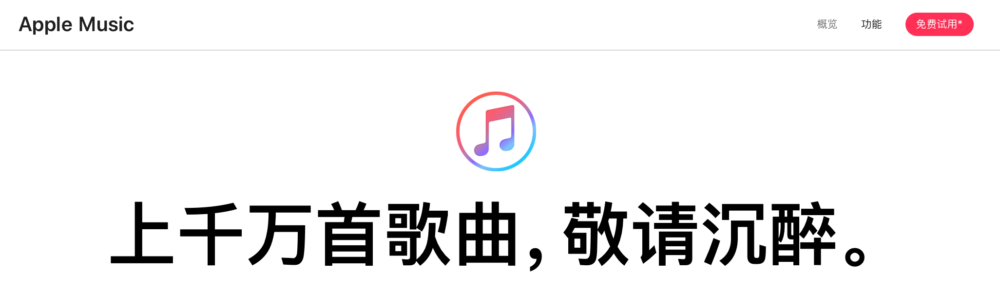
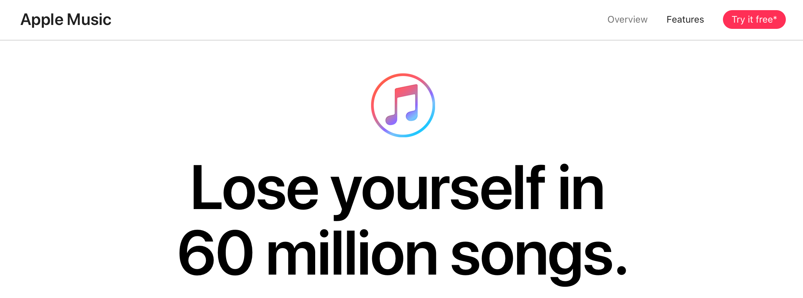
- 其他非中区的曲库数量和美区相当，但因为不同区上架的歌曲一般都是根据不同区的用户喜好、歌手发展区域等，最终由版权授权决定，所以还是会有些差别，不存在某个地区所有的歌都有的情况。在线曲库没有的歌曲，可以自己上传到 iCloud 音乐资料库，并同步到所有设备。
- 如果想知道确切的某首歌、某张专辑、某个歌手在某个地区的 Apple Music 上有没有上架，可以通过 Apple 官方的「Apple Music 营销工具」查询，全球所有上线 Apple Music 的地区均可查询，建议电脑端访问。如果查询不到则说明没有在那个地区上架。
一个上千万，一个六千万，大到六倍的差别，到底具体差在哪呢，中国大陆的曲库到底少了什么？通过几个例子来看下：
版权分割
曲库差异最基本的原因就是版权，在中国大陆地区尤其明显。众所周知，中国大陆地区的主流音乐播放软件是 QQ 音乐、网易云音乐、虾米音乐……Apple Music 并不是主流，某些歌曲的版权自然争不过主流平台，特别是腾讯这个龙头老大。
- 例如，TFBOYS 的歌曲在新加坡区和中国大陆区的上线情况如下图：
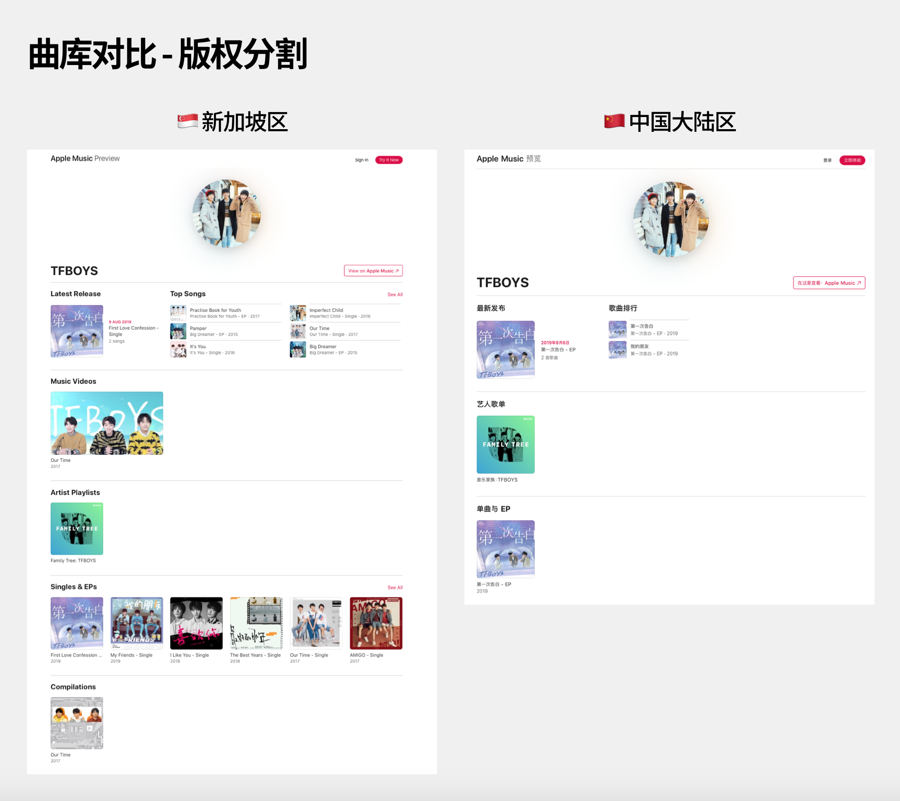
- 除了版权分割导致的数量差异，还存在不同区上线时间不一致的情况。歌手「Eminem」于 2020 年 1 月 17 日推出全新专辑《Music To Be Murdered By》。当时美区正常上架，中区不见其踪影，一段时间后才姗姗来迟。
儿童不宜内容？
含有性描述、暴力、脏话、毒品等这些儿童不宜内容的歌曲在 Apple Music 会被打上 E 标（E 在此指英文单词「EXPLICIT」），也俗称「脏标」。这类歌曲在中区会被进一步处理，处理的方式五花八门。
- 还是上面提到的歌手「Eminem」的这张专辑《Music To Be Murdered By》，在中区，脏标版本只上架了歌曲序号为 4、20 的这两首歌，非脏标版本上架了全部的 20 首歌曲，但脏话在歌曲和歌词中均被和谐。
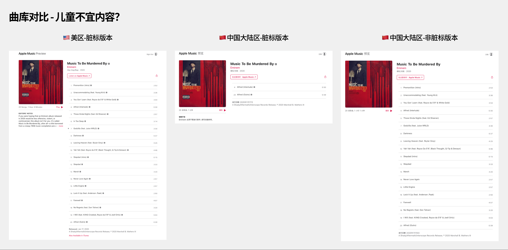
- 歌手「Enrique Iglesias」的《SEX AND LOVE》这张专辑，由于在专辑封面和专辑名字中含有「SEX」这个词语，在中区得到了特别处理。
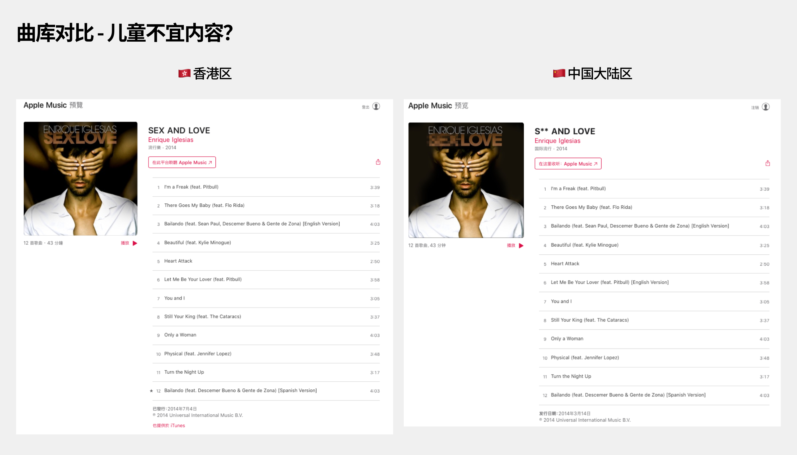
- 歌手「Nicki Minaj」的《Queen》这张专辑，其专辑封面在中区得到了特殊处理。
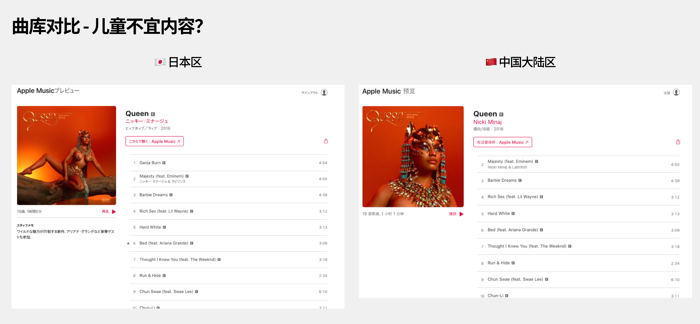
- 歌手「Lauv」的《~how i’m feeling~》这张专辑，前两首歌的歌名中包含了「drugs」和「fuck」这两个词语，在中国区未上架。
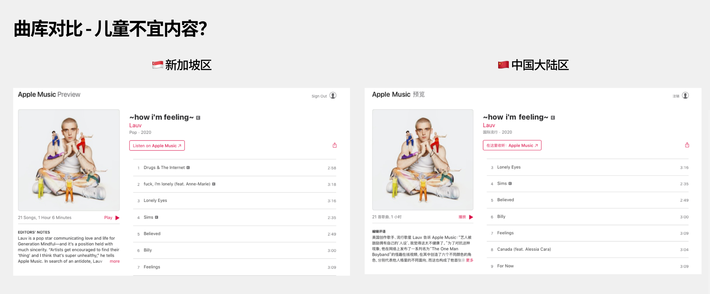
法律法规影响
根据不同地区的法律法规，部分歌手的歌曲不能在某些地区上架或上架一段时间后被下架，例如下图中的歌手 Li Zhi。
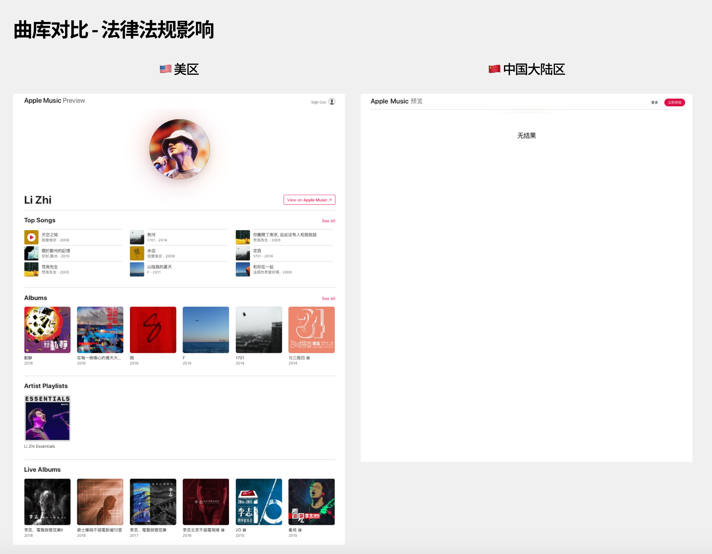
功能差异
相比于曲库的差异，不同地区 Apple Music 功能上的差异似乎讨论的不多。实际情况是，根据不同地区对音乐内容的政策不同，相关功能也就会不同，而且差异还不小。
电台
电台功能应该是功能差异中最容易发现的，如果你进入 Apple Music 「广播/Radio」栏目，相比非中区，中区的内容十分单薄，只有根据歌曲类型由机器自动生成的一些电台。
- 这主要是因为中区 Apple Music 没有「Beats 1」电台功能，根据 Apple 的描述，「Beats 1 是一个 24 小时直播电台，由 Apple 的 DJ 在洛杉矶、纽约和伦敦进行广播。在 Beats 1 收听由著名艺人和 DJ 主持的直播节目和独家采访，并发现来自世界各地的新音乐。」Beats 1 除了包括实时广播以外，在 Apple Music 中还可以听到往期的 Beats 1 直播回放，看到 Beats 1 的相关视频，如与歌手的访谈。Apple Music 也会根据 Beats 1 的内容，将相关歌手、专辑、单曲、播放列表打包成组，推荐给用户。

- 2020 年 8 月 19 日 Apple 发出新闻稿，Beats 1 电台升级为「Apple Music 1」，新增「Apple Music Hits」和「Apple Music Country」两个电台。这三个电台均可在非中区的 Apple Music 中收听。
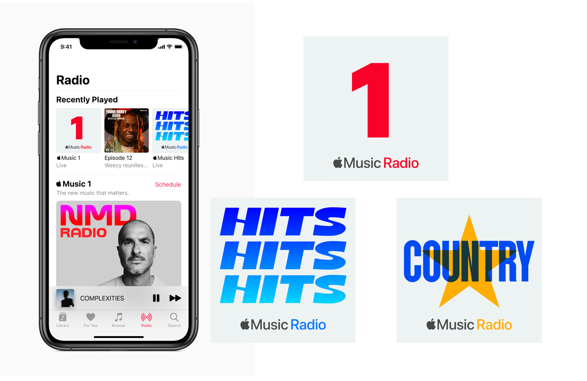
- 除了 Beats 1 电台，非中区的 Apple Music 还包括本地或其他地区与音乐有关的实时直播电台。
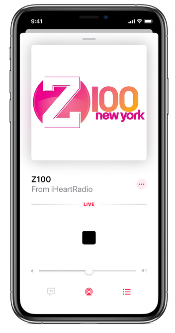
- 下面这张图几乎在同一时刻截取了五大地区 Apple Music 「广播/Radio」模块下的展示内容，供参考。

- 值得注意的是，即使你没有订阅 Apple Music，你也可以收听 Beats 1 直播电台和其他直播电台。
朋友
朋友功能算是 Apple Music 在音乐轻度社交上的一些探索，随着 2017 年的 iOS 11 开始推出，其主要目的是可以与朋友更好地分享正在收听的内容。以下所有功能均未在中国大陆区上线。
- 个人主页&关注朋友：每一个使用 Apple Music 的用户都可以建立自己的个人主页，在主页中可以看到正在听的音乐、分享的自己创建的播放列表以及关注和被关注的用户，这项功能没有地区隔离，也就是说你可以关注全世界任何一个地区的使用此功能的 Apple Music 用户。当然，个人主页是否公开、正在听的音乐是否展示、自己创建的播放列表是私密还是公开完全由你自己控制。
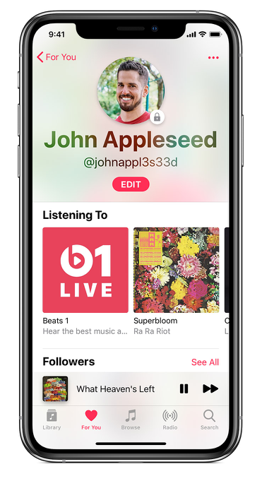
- 「朋友们正在听」列表和「Friends Mix」 智能歌单：当你关注了其他人后，就可以在「为你推荐/For You」模块下看到「朋友正在听」列表，同时在 Apple Music 的各个地方（如专辑封面、播放列表封面、专辑详情页面、播放列表详情页面）可以看到正在听的朋友的头像。当关注的朋友足够多时，Apple 会自动生成「Friends Mix」智能歌单，结合你的喜好，收录近期朋友听的歌，每周更新。你可以通过链接访问其他人的 Friends Mix 歌单，中区用户也可以。
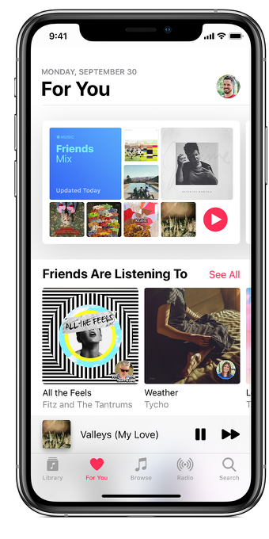
- 搜索别人公开分享的播放列表：当用户创建的播放列表设置为公开时，你可以通过搜索功能搜索到这些播放列表。中国区仅支持通过链接查看，不支持搜索。
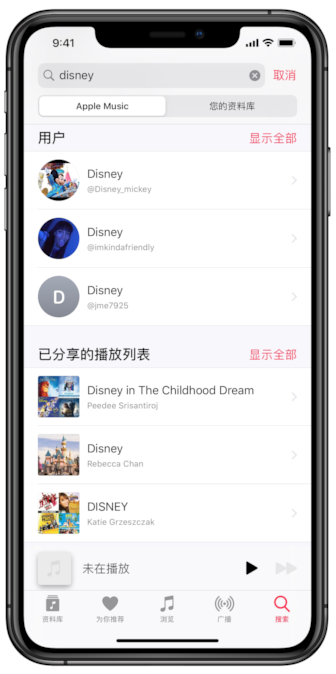
全球 Top 100 歌单
- 2018 年 Apple Music 推出了每日更新的全球及各个地区的 Top 100 歌单，例如「Top 100: USA」歌单，一般固定在「浏览/Browse」模块下展示。该功能在美区、新加坡区、日区已上线，港区、中区未上线。
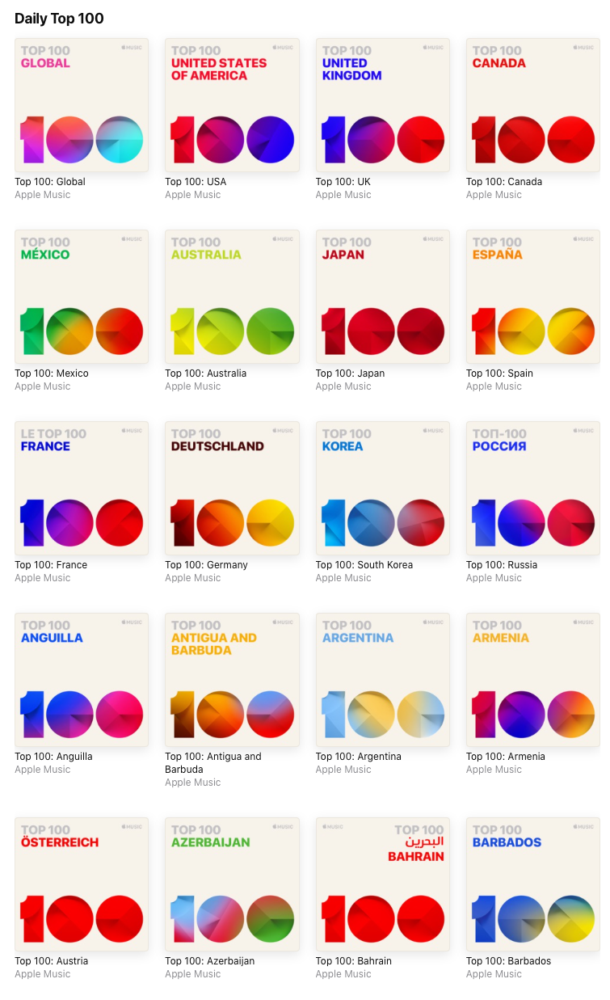
- 在 2019 年年末，Apple Music 又推出了全球和各地区的年度 Top 100 歌单，例如「Top 100 Songs of 2019: Global」歌单。当时在有每日 Top 100 歌单的地区的「浏览/Browse」模块下做过推荐展示。这些歌单现在可以通过搜索或链接访问。

电视与影片
- Apple Music 中的「电视与影片」大部分是自制的与音乐有关的电视节目，如 Apple Music 曾经主推的《Carpool Karaoke》、《Planets of the Apps》、「Up Next 系列」（如《Up Next: Billie Eilish》，最近上线的音乐纪录片《The Changes Interview》，一般均自带中文字幕。电视与影片可以和歌手、歌曲、专辑、播放列表，甚至是 App Store 中的内容、iTunes Store 中的内容打包到一起做内容推荐。该功能未在中国大陆区上线。
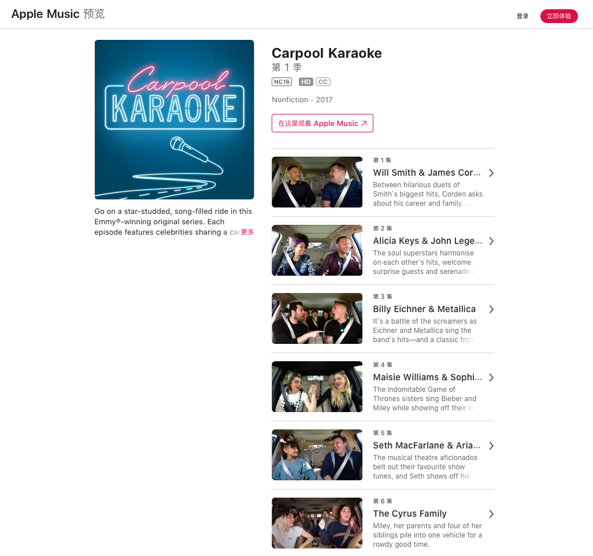
- 在 Apple Music 中，曾经有专门的入口进入「电视与影片/TV&Movies」模块，目前该入口在几次改版后下线，该模块被弱化，但未停止更新。电视与影片目前可以通过搜索、链接或者编辑内容推荐访问。
iTunes Store & iTunes Match
- 在 Apple Music 音乐流媒体推出之前，全球许多个国家或地区（不包括中国大陆地区）一直可以通过 iTunes Store 付费购买歌曲或专辑。Apple Music 中的歌曲会随着版权的变化发生变化，一首歌现在可以听，并不代表你永远可以听，它属于音乐流媒体；iTunes Store 中的歌曲只要你购买了，那就属于你自己，它属于电子音乐购买。
- 根据版权的授权，部分歌曲可能存在在 Apple Music 中没有上架，但在 iTunes Store 中上架的情况，例如「Justin Biber」的专辑《Purpose (Deluxe)》中的第 11 首歌《Where Are Ü Now》未在 Apple Music 中上架（灰色不可播放状态），但可以在 iTunes Store 中通过购买整张专辑的方式获得。

- 同一个 Apple ID 下，在 iTunes Store 中购买的音乐会自动进入 Apple Music 的 iCloud 音乐资料库。
- iTunes Match 是 Apple 于 2011 年推出的一项服务，如 Apple 官方描述，「通过 iTunes Match，您可以在自己的所有设备上访问您的所有音乐，甚至还可以访问您从 CD 等其他来源导入的歌曲。」简而言之，iTunes Match 的功能主要是「匹配（不等于上传）用户导入的音乐」和「在设备间同步音乐资料库」，可以说是「iCloud 音乐资料库」的前身。该服务未在中国大陆地区上线。
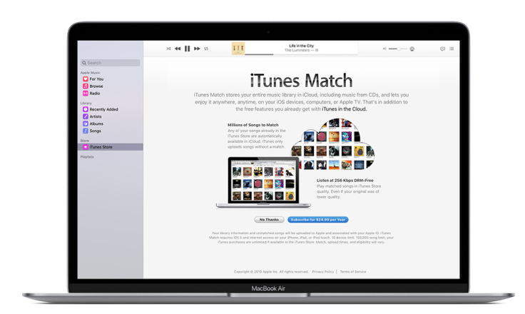
- Apple Music 推出后，涵盖了 iTunes Match 的所有功能。iTunes Match 不再推广，但并没有停止运营，现在你仍可以通过 iTunes Store 的边栏找到入口，按年订阅 iTunes Match。
- 由于早期中国大陆地区没有 iTunes Store 功能，也就没有推出过 iTunes Match，现在的 Apple Music 也就不包括 iTunes Match，以上是官方描述。但在实际情况中，中国大陆地区的 Apple Music 在使用 iCloud 音乐资料库上传歌曲后，某些歌曲可以呈现「已匹配」状态。2019 年 1 月有网友在 V2EX 发帖称，原来上传后状态为「已匹配」的无压缩、无 DRM 保护的歌曲变成了「已匹配」的有压缩、有 DRM 保护的歌曲，而非中区不存在这种情况。2019 年 2 月又有网友在 V2EX 发帖称，自己上传的歌曲不仅存在上述问题，歌曲还出现了不明杂音，不知此情况是否为个别现象或是 bug。故此功能在中国大陆区的具体规则十分模糊。
类似艺人
「类似艺人」是指在 Apple Music 的歌手页面的最底部，会推荐其他相似的艺人/歌手。非中区都包含此功能，中区没有显示此模块，不显示原因未知，很迷惑。例如，下图中歌手「周杰伦」的页面：
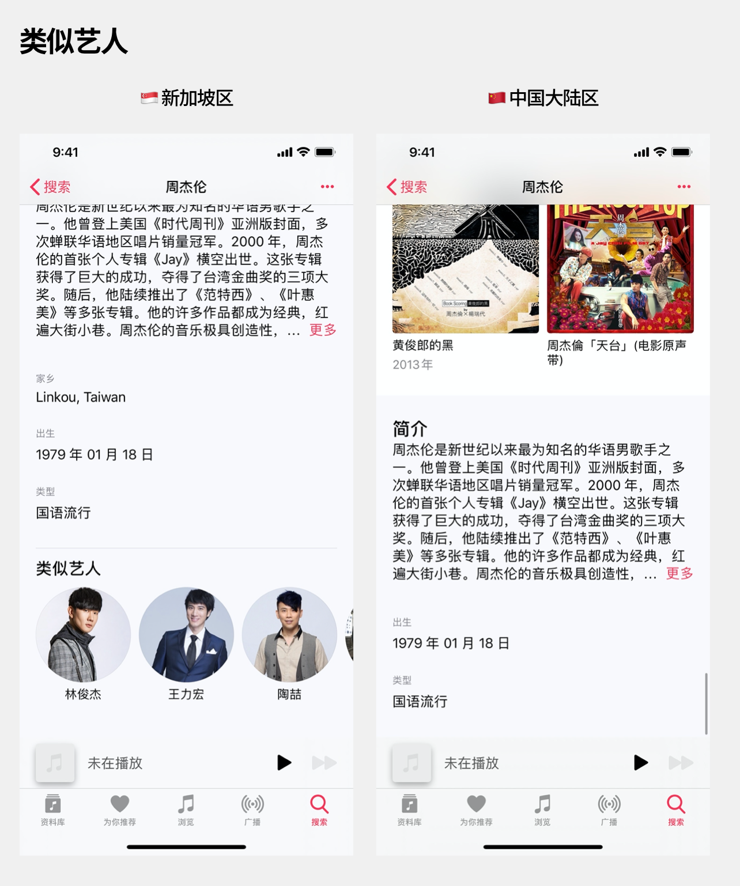
音乐向导
「音乐向导」可以理解为 Apple Music 中某些官方机构、组织创建的播放列表合集，这个功能随着 Apple Music 改版被弱化，从之前的专门入口演变到现在只能通过搜索或链接访问，但并没有停止更新。非中区的音乐向导基本一致，但中区只包含部分，其他即使通过链接也无法访问，如音乐向导「Disney Music」。例如，以「music」为搜索关键字搜索音乐向导：
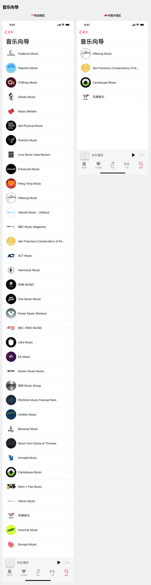
内容展示
曲库语言逻辑
- Apple Music 的曲库显示语言是指除歌曲本身之外的文字的显示语言，如专辑介绍、歌单推荐语、歌单封面、歌手名字等。一般情况下，专辑和歌曲的名字在各个地区都是一样的，但根据专辑在全球的发行情况的不同，也存在专辑和歌曲名字被翻译成当地语言的情况，比如部分中文歌曲在美区是以英文名呈现的。
- 各个地区的 Apple Music 支持的显示语言是不同的，一个地区并不会支持全球所有语言，会根据对应地区的用户的常用语言来决定，且不止一种，并一定包括英文，但只有一种会被作为「主要显示语言」。
- 以 iPhone 为例，如果 iOS 系统的语言设置为 Apple Music 在本地区支持的显示语言的某一种，那么 Apple Music 就会以系统设置的语言展示；如果 iOS 系统的语言设置为 Apple Music 在本地区不支持的显示语言，那么 Apple Music 就会以「主要显示语言」展示。
- 为了更好地理解上述逻辑，把五个地区的 Apple Music 在不同系统语言下展示情况列举如下：
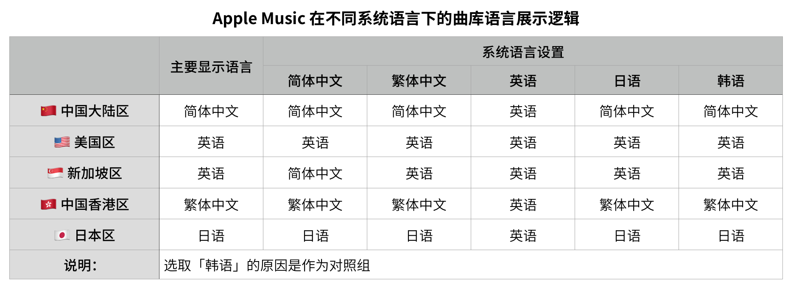
- 由上表可以看出，美区在表中所列五种语言的系统设置下均显示为英语；新加坡区可以在系统设置为简体中文时显示为简体中文；港区在除英文系统下均显示为繁体中文；日本区只有在系统设置为英语时显示英语，其他情况下均显示为日语，包括简体中文系统设置下。
- 值得特别提及的一点是，日语歌曲的歌曲信息在日区非日语系统环境下和其他区所有语言环境下一般都以「罗马音」形式展示，这是许多人吐槽的一点。
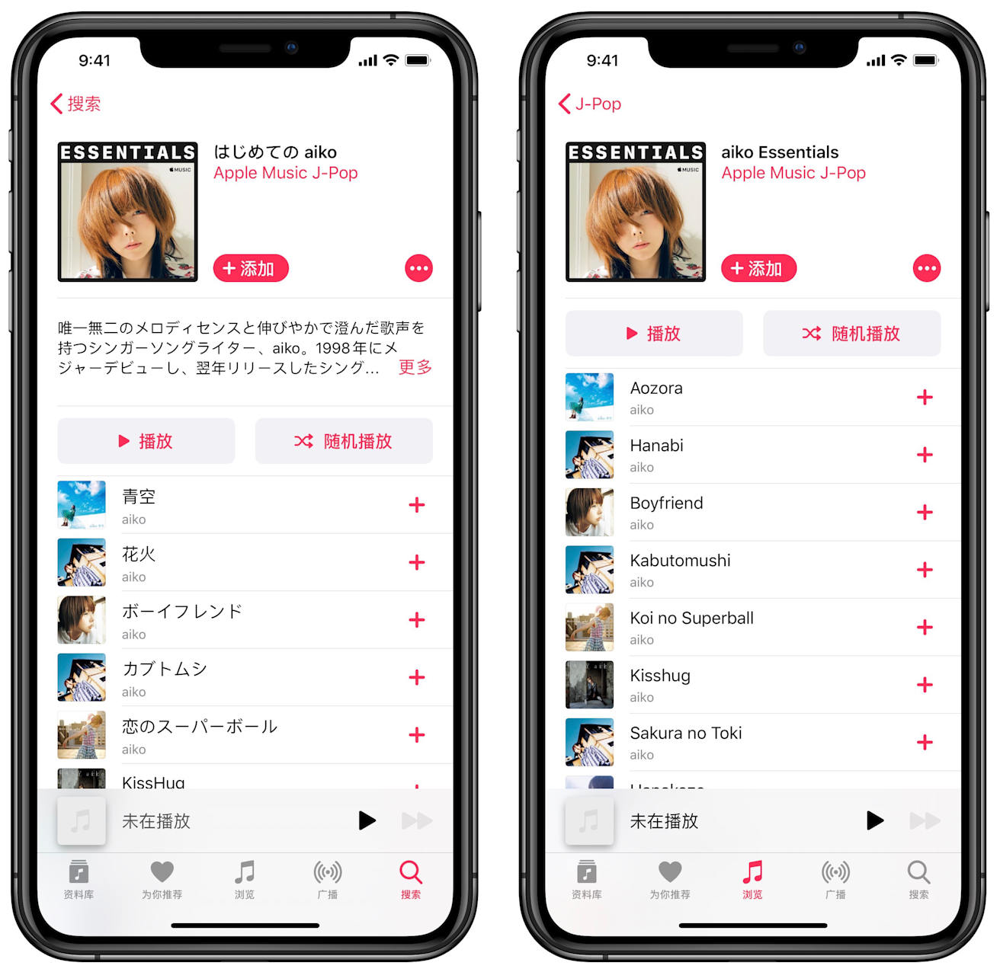
内容推荐
- 除了自己搜索发现或者通过外部链接访问以及机器智能推荐，在音乐软件中发现音乐的另一种途径是人工内容推荐，这一部分也是 Apple Music 在推出时强调的亮点之一。人工内容推荐在 Apple Music 中占据了较大的篇幅，整个「浏览/Browse」模块几乎都是人工内容推荐，比如带有推荐语的最新专辑推荐、根据时间/节日/时事等编排的歌单列表推荐、本地特别发行专辑推荐、近期本地热门影视原声歌曲推荐、热门艺人 MV 推荐、即将发布专辑推荐等。
- 根据各地区用户对音乐的偏好不同，即使在曲库差不多（除中区）的情况下，Apple Music 推荐的内容也会不同。概括来看，中区内容推荐以华语音乐（偏国语）和欧美音乐为主，美区内容推荐以欧美音乐为主，新加坡区内容推荐以华语音乐（偏国语）和欧美音乐为主，港区内容推荐以华语音乐（偏粤语）和欧美音乐为主，日区内容推荐以日语音乐和欧美音乐为主。
- 下面这张图几乎在同一时刻截取了五大地区 Apple Music 「浏览/Browse」模块下的展示内容，供参考。

多平台使用
Apple Music 是支持多平台的音乐流媒体服务，除了 iPhone、Android 手机，你还可以在 iPad、Mac、Windows、网页端、Apple TV、Apple Watch、HomePod、第三方电视端、第三方智能音箱、CarPlay 、第三方网页端和 app 上使用。
- iPhone、iPad、Apple Watch、HomePod、Mac：苹果常见的自家产品系列自然不用多说，系统原生支持，所有地区帐号均可在上述设备正常使用。2019 年从 macOS Catalina 开始，Apple Music 和 iTunes Music Store 从 iTunes app 中分拆成了独立的「音乐/Music」app；即使在 HomePod 上登录未发售地区的 Apple ID，也可以正常使用 Apple Music。
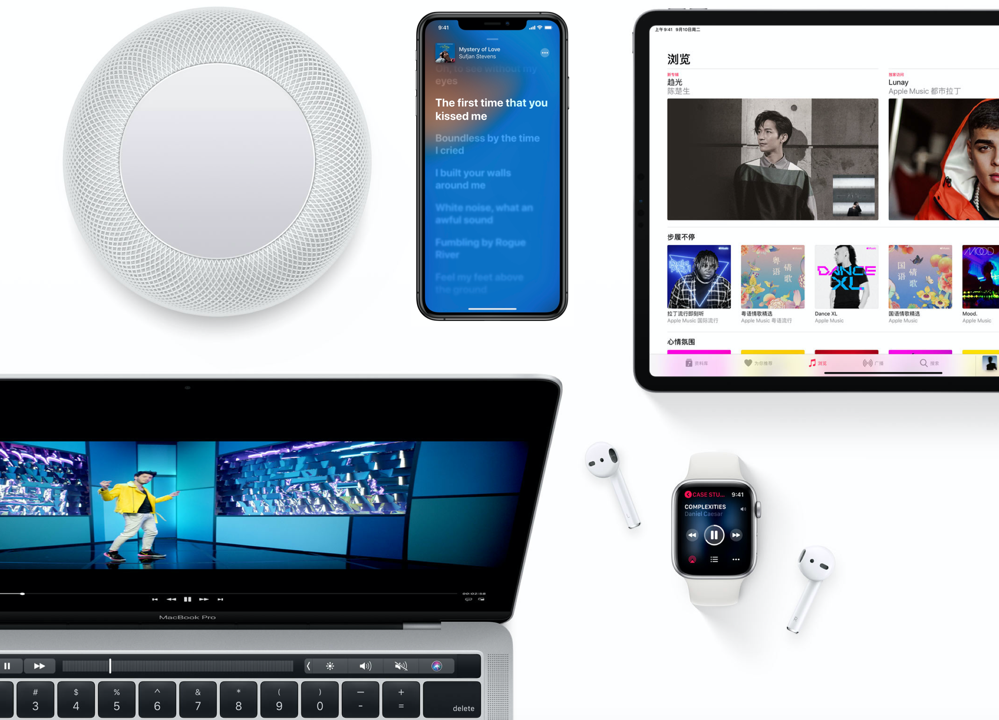
- Android 手机、Windows：2015 年 11 月，Apple Music 正式上线五个月后，Apple Music Android app 正式发布，你可以通过 Google Play 或者从 Apple 网站直接下载 Apple Music Android app。通过 Apple Music Android app 你可以将其与 Chromecast、Android Auto 结合使用。在 Windows 中，你需要通过安装 iTunes app 使用 Apple Music 相关服务。所有地区帐号均可在上述设备正常使用。
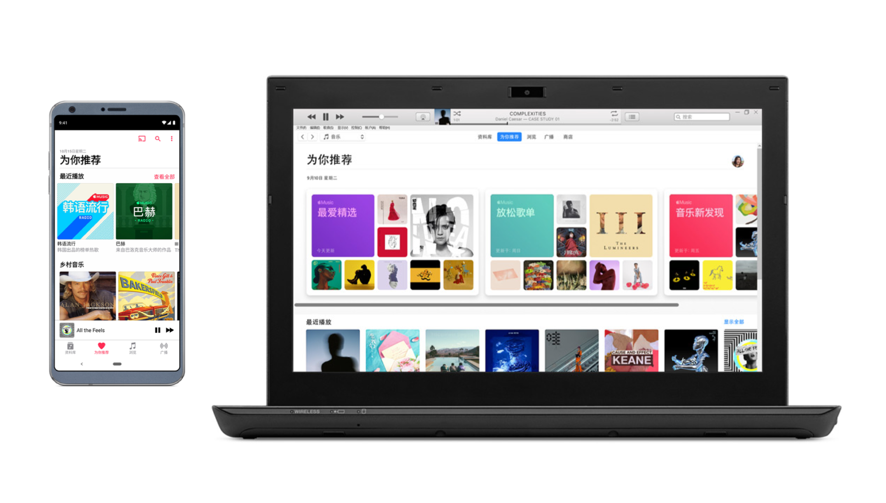
网页端：2019 年 9 月 Apple 上线了网页端的 beta 版 Apple Music，用户可以在浏览器中使用 Apple Music，其访问地址是：https://beta.music.apple.com/。由于是 beta 版，部分功能暂时不可用，例如 Beats 1 直播电台、Apple 原创音乐视频、智能播放列表，并且你不能在网站中开启 Apple Music 的订阅。值得注意的是，在笔者的上海电信网络环境下，直接访问网页端 Apple Music 会自动跳转至 Apple Music 苹果官网，导致网页端 Apple Music 服务无法正常使用，若使用非大陆地区网络访问则是正常的，其他地区和运营商网络访问情况未知，导致这个问题的原因未知。
2020 年 4 月，Apple Music 网页版正式上线，其访问地址是： https://music.apple.com/ ，Apple Music 包含的大部分功能都可在网页版中使用。

2020 年 8 月，Apple Music Web Beta 版开始测试与 iOS 14、iPadOS 14 对应的新样式、新模块，「为你推荐」调整为「现在收听」，搜索更加突出了按类别搜索，整体个性化内容推荐更加丰富。
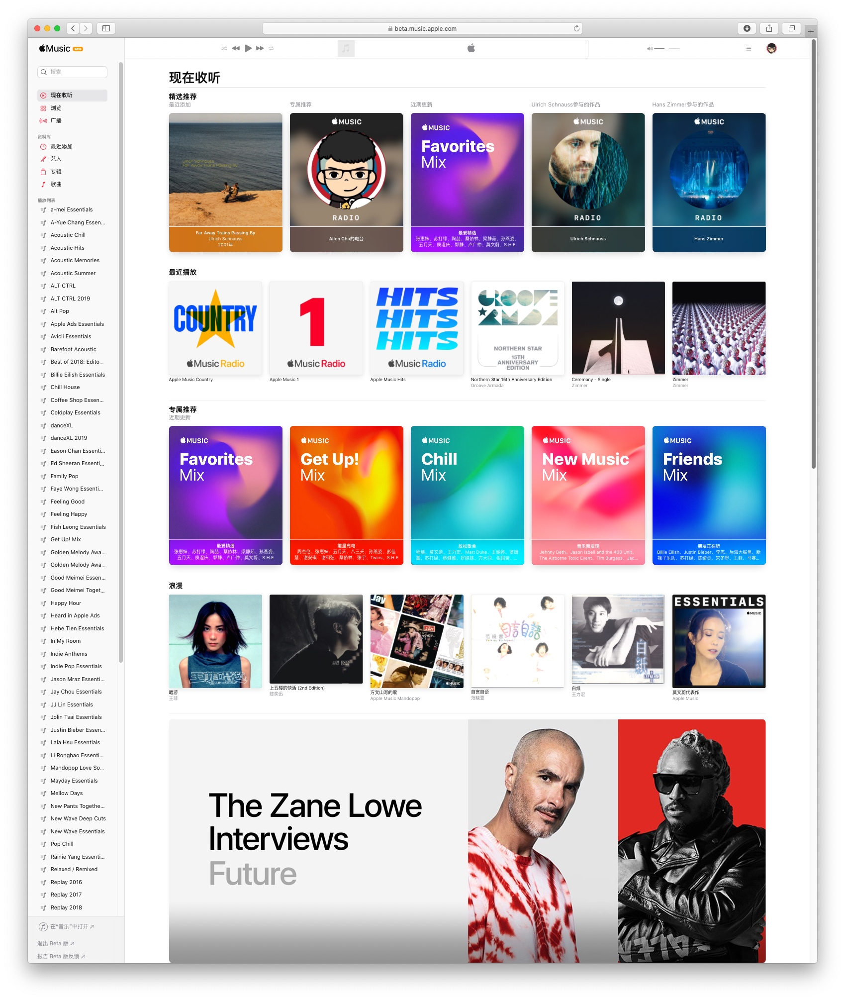
Apple TV:Apple Music 同样在 Apple TV 上提供服务。由于 Apple TV 未在中国大陆地区发售，使用国区 Apple ID 登录 Apple TV，没有「音乐/Music」服务，无法正常使用 Apple Music，其他四个地区的 Apple ID 可正常使用。
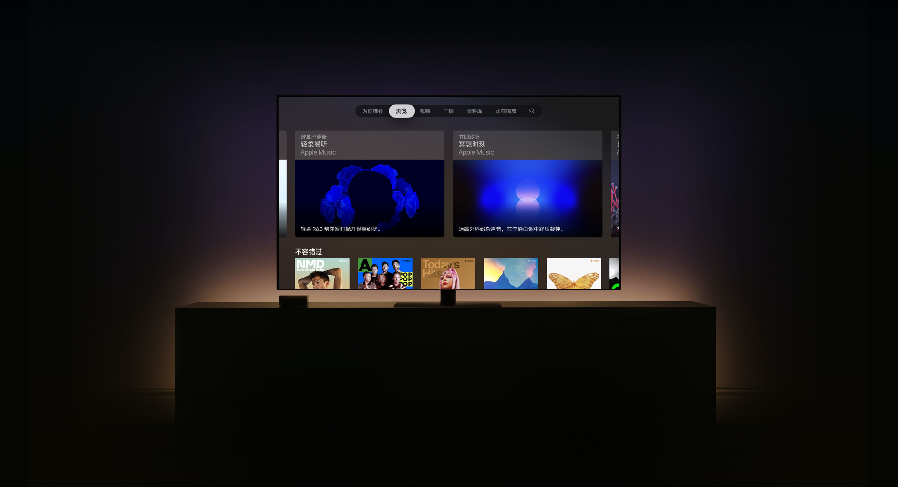
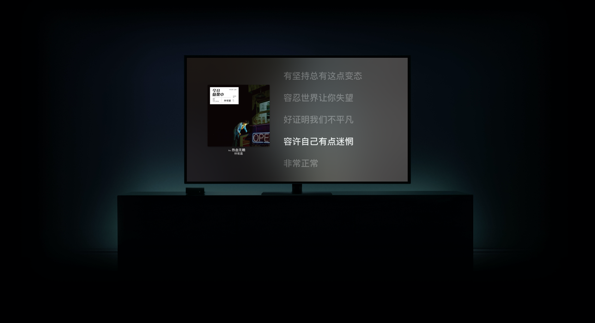
第三方电视端：2020 年 4 月， Apple Music 以独立 app 的形式在三星智能电视上上线 ，这是 Apple 的媒体服务在第三方设备上的又一次扩张。可以预见，支持 Apple TV app 的智能电视/盒子（如 LG、Amazon Fire TV、Sony）在未来应该也会上线 Apple Music app。

关于第三方电视端的 Apple Music 值得注意的几点：
- 和 Apple TV app 以及 AirPlay 2 功能一样，Apple Music app 目前不支持国行设备，LG、三星国行设备可以通过换区解决（换区指南↗︎），其它国行设备暂时无法解决；
- 同一设备上，Apple Music app 和 Apple TV app 的帐户登录是独立的，也就是说你可以在同一设备上使用不同的 Apple ID 同时登录两个 app，这在 Apple 自己的设备上是无法实现的；
- 你可以在第三方电视端的 Apple Music app 中登录并正常使用国区 Apple Music，这在 Apple TV 上也是无法实现的。
CarPlay：你可以将 iPhone 与你的 Apple CarPlay 车载连接，从而在汽车的中控界面中使用 Apple Music。支持 CarPlay 的车型可前往 Apple 官网查看，所有地区的 Apple ID 都可以在 CarPlay 中使用 Apple Music。
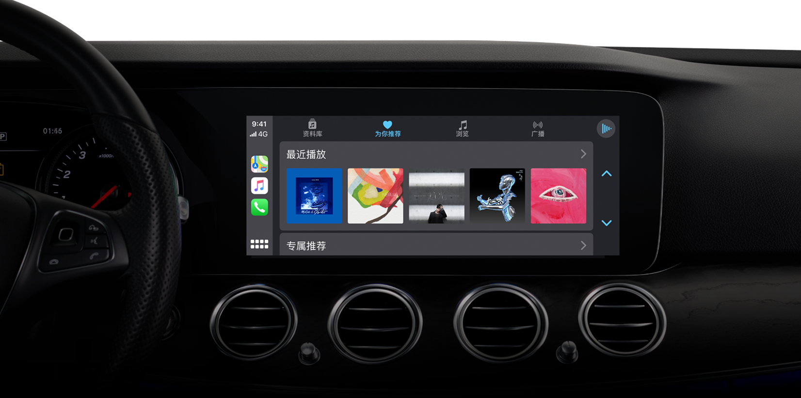
- 第三方智能音箱：你可以在 Amazon Echo、Amazon Fire TV、Sonos 上连接 Apple Music 帐户以使用 Apple Music 服务，具体可查看官方说明文档。在 Amazon 设备上使用 Apple Music 可能需要 Amazon 设备销售地区的 Apple Music 帐户。
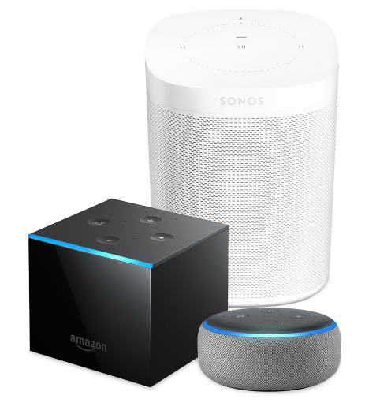
- 第三方网页端和 app：利用 Apple 提供的 MusicKit，开发者可以在自己的 iOS app、Android app、网页端接入 Apple Music 服务，可以是部分功能接入，可以是全功能接入，即作为一个第三方 Apple Music 客户端，iOS 端 app 通过请求「媒体与 Apple Music」权限访问 Apple Music 内容，Web 端 app 通过 Apple ID 授权第三方登录的方式登录使用。例如：
- 第三方网页端：Musish、Apple Music Web Player From Naveed Golafshani、feverTunes、Zachary Seguin Music、Maeve。
- 网页中嵌入自定义 Apple Music 内容：我的个人博客的「Music」页面 - 未登录时歌曲只可以试听，登录订阅帐号后可完整播放。
- 第三方 iOS app： Marvis Pro、Soor ▹、SongOwl、SoundShare。
- 接入 MusicKit 的工具型 iOS app：Shazam（歌曲识别）、MusixMatch（歌词）、SongShift（歌曲迁移）、Miximum（自定义歌单）、MusicHarbor（歌手关注）。
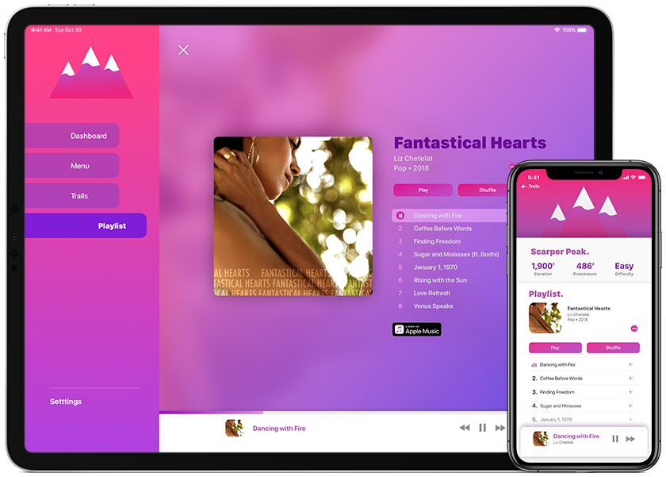
多 Apple ID 使用
该部分主要适应于 Apple 设备，非 Apple 设备一般不存在多 Apple ID 使用的情况。
- 以 iPhone 为例，系统中的 Apple ID 帐号分为「iCloud 帐号」和「iTunes Store 与 App Store 帐号」：
- iCloud 帐号负责管控与云同步相关的功能，例如同步照片、通讯录、日历、备忘录、Safari 收藏夹、钥匙串以及 iCloud 云盘功能；
- iTunes Store 与 App Store 帐号可简称为 Apple 媒体帐号，负责管控系统中所有与内容媒体相关的功能，例如 App Store、Apple Music、iTunes Store、Apple TV、Podcast、Books、TestFlight。
- 同一台设备上登录的 iCloud 帐号和 Apple 媒体帐号可以相同，也可以不同，默认相同。
- 其他 Apple 设备的逻辑大体相似。
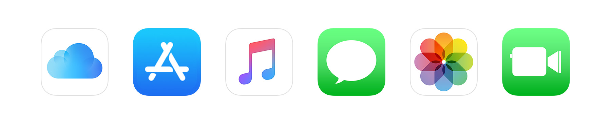
- 由于非中区 Apple ID 付款方式终归不如中区便利，在中国大陆使用非中区 Apple Music 的用户一般还同时拥有一个中区 Apple ID，常用于 App Store 的付费应用和服务的购买和订阅或者下载只在中区上架的 app（如 Bilibili）。但基于上述逻辑，你无法在同一台设备上让 Apple Music 登录 A 帐号，App Store 登录 B 帐号，iTunes Store 登录 C 帐号……于是你就不得不有切换 Apple 媒体帐号的需求。
- 在 iOS 设备、HomePod 上切换 Apple 媒体帐号时可借助系统自带 iCloud钥匙串、1Password 等工具自动填充密码，减少输入，简化流程；在 watchOS 设备上，Apple 媒体帐号与配对的 iPhone 保持同步；在 macOS 设备上切换 Apple 媒体帐号时可借助 1Password 等工具填充密码；由于 Apple TV 定位于家庭中多用户使用的设备，在 Apple TV 中可登录多个 Apple ID，从 tvOS 13 开始，需要切换 Apple 媒体帐号时可一键切换，无需输入密码。
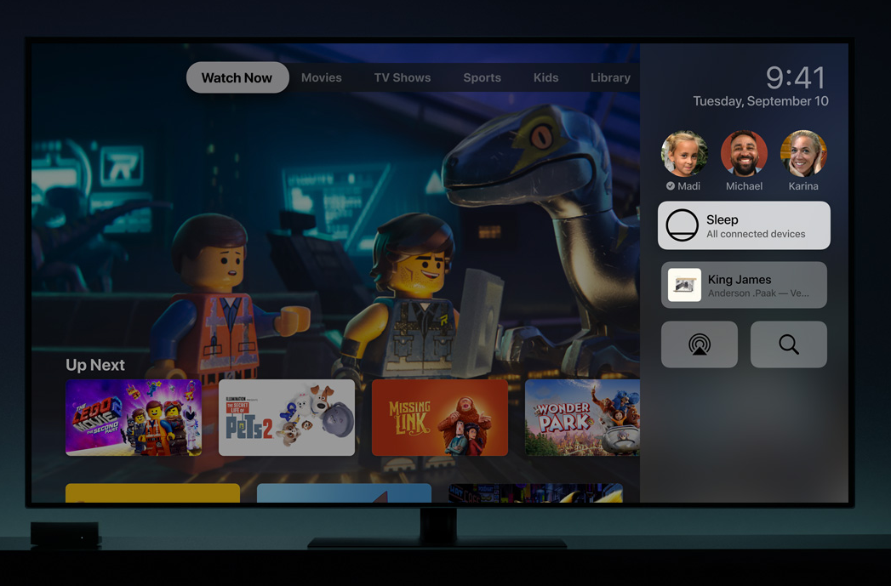
- 第一点值得特别注意的是，在 iOS 设备和 macOS 设备上切换 Apple 媒体帐号时，iCloud 音乐资料库里已下载的内容中，属于 Apple Music 的内容会被从设备本地移除，属于用户自己上传的内容不会被移除。重新登录此 Apple ID 后，需在开启 iCloud 音乐资料库后重新下载（系统内也可能保留有上次下载内容的缓存，若有可快速加载）。
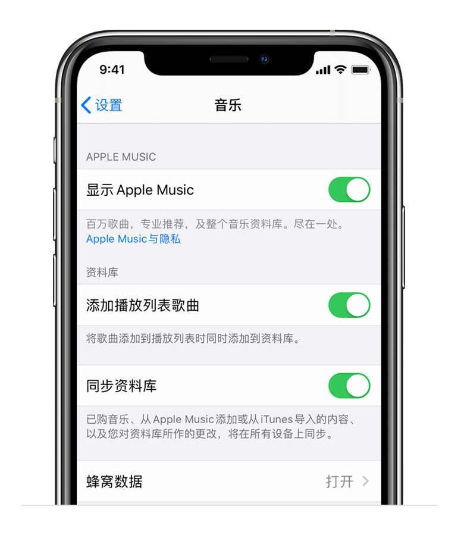
- 第二点值得特别注意的是， Apple 媒体服务设有 90 天帐号与设备绑定逻辑，具体如下：当在一台设备上使用不同的 Apple ID 启动 Apple 媒体下载功能（如开启 iCloud 音乐资料库，下载 iTunes Store 购买的音乐、电影、电视剧）时，系统会提示你需要将此设备与当前登录的 Apple 媒体帐号绑定，90 天内不能使用其他 Apple ID 的 Apple 媒体下载功能。绑定后若再使用其他 Apple ID 开启 Apple 媒体内容下载功能时，系统会提示此设备已与其他 Apple ID 绑定，并告知还剩余多少时间。若不小心错误地触发绑定，可联系 Apple 官方客服，有一定几率可以提前解绑。以上适应于 iOS、Android、Mac、Windows 设备。
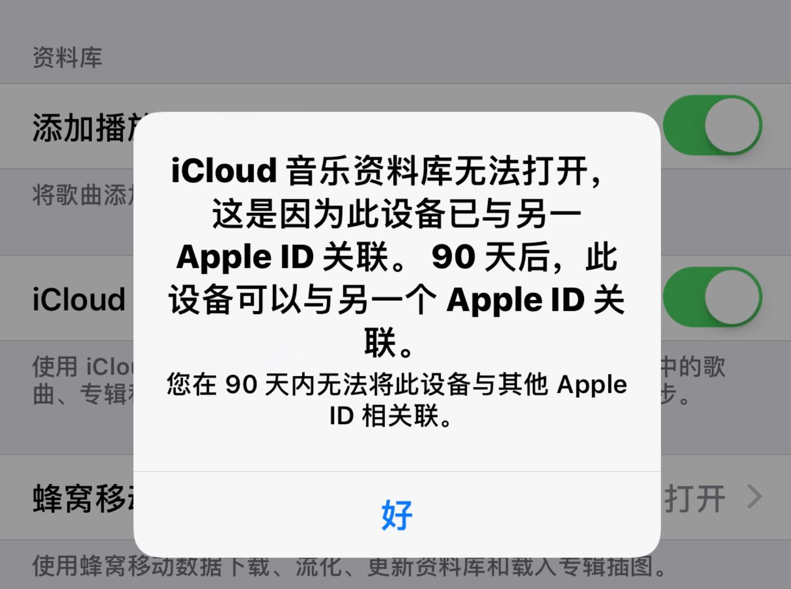
- 关于 app 的下载，对于从 A 帐号下载的 app，在登录 B 帐号的情况下，只要 B 帐号所在地区的 App Store 有上架此 app，无需切换回 A 帐号就可检测到该 app 的更新，并可以正常更新，第一次更新时可能要求输入 A 帐号的登录密码。
- 关于 app 的内购和订阅，对于 A 帐号购买的 app 的内购和订阅，一般情况下只能在登录 A 帐号的情况下才能恢复购买；在使用 A 帐号下载的 app 中，不能在登录 B 帐号时进行内购和订阅的付费。
- 对于只在中区或者只在某一个地区上架的应用需要更新时，可以通过这个小工具快速切换当前设备 Apple 媒体服务到对应的地区，检查 app 更新并完成下载更新。注意该工具仅是通过一个链接跳转到了其他区的 Apple 媒体服务，并没有修改 Apple ID 的地区，你也不能购买/播放其他地区的应用/音乐。你也可以利用这个工具查看任一地区的 Apple Music、App Store、iTunes Store 内容。若不能正常跳转可尝试通过代理访问。
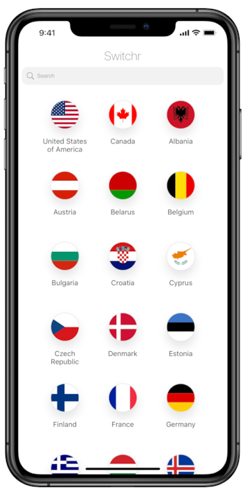
- 除了 App Store 和 Apple Music，Apple 媒体服务还包括 iTunes Store（影片、电视节目、音乐、铃声和提示音）、Apple Arcade、Apple TV+、Apple TV Channel、Apple Books（图书、有声书）、Apple 播客、Apple News（含 Apple News+）。根据政策和版权的限制，不同地区提供的 Apple 媒体服务不同。在使用某一个地区的 Apple ID 时，你可能也会用到其他 Apple 媒体服务，故将五个地区的 Apple 媒体服务的提供情况列表对比如下：
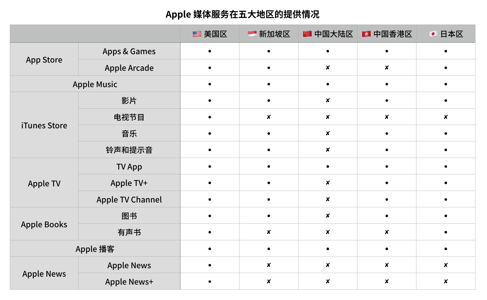
- 其中 Apple TV app 即使不支持某个第三方 app 作为一个频道订阅，但还可以支持搜索、展示第三方 app 的内容，如 Disney+、Amazon Prime Video，该功能目前在美区帐号中提供，具体支持列表参见 Apple 官方网站。
- 当然，即使某项功能提供服务，在不同的地区提供的内容也是不同的。例如所有未经允许的含有 VPN 功能的 app（如 Speedtest、Adguard）都无法上架中区、未在中国大陆地区提供服务的 app（如 Netflix、Spotify） 没有上架中区、因各种原因被屏蔽的 app（如 Skype、Pinterest）无法上架或主动不上架中区、某些中区上架的 app 为中区特供版（如中区 Sky 光·遇、非中区 Sky 光·遇，中区 Flipboard、非中区 Flipboard）、Apple 播客中的节目在中区经过筛选（如 《Drake Freestyle》 未上架中区）。
总的来看，美区的 Apple 媒体资源最丰富，功能最齐全，其次是日区、新加坡区、港区。
真心期望 Apple 能在未来的版本中将各个媒体服务的 Apple ID 独立，不过希望渺茫🙃。
订阅付费
价格对比
- Apple Music 包括个人订阅、学生订阅（需定期验证学生身份）、家庭订阅（可与其他同一地区的五个人组成家庭组）三种，在不同地区的价格也不一样。五大地区的具体订阅价格如下：

- 从上表中可以看出，中区比其他地区便宜数倍，美区最高，其次是日区，港区和新加坡区价格相当。
付款方式
- 付款方式可能是使用非中区 Apple ID 除注册过程之外的另一个重大障碍。根据 Apple 官方的描述，五个地区的 Apple ID 支持的付款方式如下表：
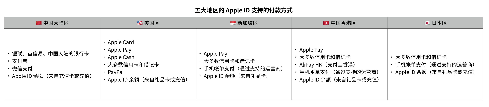
- 因为 Apple ID 支持的付款方式中的信用卡和借记卡严格限制为本地区发行，所以除中区外一般情况下各个地区最便捷的付款方式还是通过礼品卡。对于中国大陆用户，礼品卡最方便购买的是美区，其次是港区、日区，再次是新加坡区，通过第三方购买礼品卡一般都会比正常汇率高一些，越方便购买的溢价越少。
- 目前只有美区礼品卡可通过 Apple 官方网站购买，20 美元起售，通过 Email 发送，可使用中国大陆发行的 Visa/Master 银行卡支付。
对于除礼品卡外，中国大陆用户常用的一些付款方式，在此简要说明，不做详述：
- 美区：美区 Paypal 绑定中国大陆发行的 Visa/Master 银行卡再绑定 Apple ID（绑定成功率低，易风控）；
- 港区：香港地区发行的 Visa/Master 虚拟储值卡，如拍住赏、八达通 O! ePay（开卡可能需要香港手机号，需验证护照/港澳通行证，充值不方便）、AliPay HK（开通帐户需要香港手机号，需验证护照/港澳通行证，充值不方便）；
- 日区：中国大陆地区发行的部分 JCB 信用卡。
想要曲库丰富&功能齐全，订阅价格就高；想要订阅价格低，曲库就不丰富，功能就不齐全。那曲库丰富&功能齐全、价格低廉就不能两全其美吗？能，来看印度区：
- 印度区同样是六千万的曲库，功能齐全；
- 个人订阅价格为 99 卢比每月，折合人民币约 9.37 元；学生订阅价格为 49 卢比每月，折合人民币约 4.64 元；家庭订阅价格为 149 卢比每月，折合人民币约 14.1 元，平均每人折合人民币约 2.35 元；
- 但是，印度 Apple ID 的付款方式仅支持印度发行的银行卡和通过印度银行卡充值 Apple ID 余额，没有礼品卡，想要付款难上加难；
- 另外，印度区的 Apple Music 内容推荐面向印度本土用户，印度风味十足。
所以即使价格低廉、曲库丰富、功能齐全也并不推荐印度区，除非你搞定付款方式以及不在乎印度风味的内容推荐。
以下是 2020 年 7 月更新：
文章仅选取了中美坡港日五个地区的 Apple Music 进行了对比，部分读者可能对为什么没有涵盖台湾区有疑问？最大的原因就是台湾地区 App Store 的支付方式不包括礼品卡，所以无法长期稳定使用台湾地区的 Apple 付费媒体服务。
不过这一情况现已发生改变。2020 年 7 月 2 日台湾地区开售 App Store 礼品卡，用户可通过台湾地区的线下便利店等渠道购买到实体 App Store 礼品卡，虽然现在暂时没有发现线上销售渠道，但这已为日后可以长期稳定使用台湾地区的 Apple 付费媒体服务奠定了基础。
下面的表格总结了 Apple Music 台湾地区的基本情况：
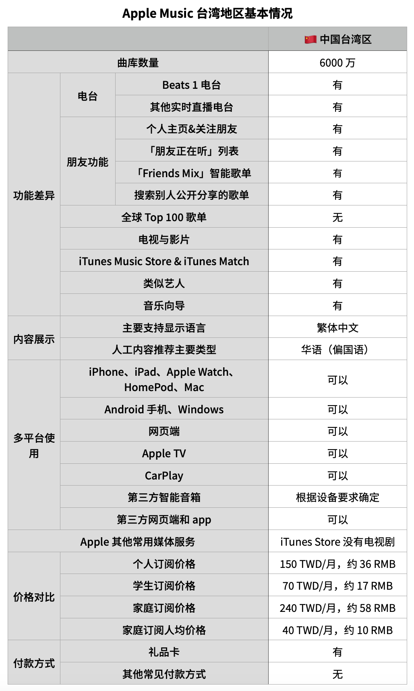
由上表可以看出，台湾区 Apple Music 曲库丰富、功能基本齐全（缺少全球 Top 100 歌单），最吸引人的是相比港区价格更加低廉，若日后台湾地区 App Store 礼品卡可以在线上渠道普及，那就完全可以作为港区的一个替代选择。
顺畅使用
Apple Music 作为一项全球音乐流媒体服务，在全球都有布置服务器，但在中国大陆地区使用 Apple Music，因为地域、运营商网络等因素，可能在访问某些服务/功能时加载速度过慢或无法加载。下表列出了 Apple Music 各个功能模块的主要访问域名，其他非主要访问域名（如图片加载、服务器判断等）未列出，若相应服务加载存在问题（特别是播放缓冲问题）可考虑通过代理访问（可能有遗漏）：
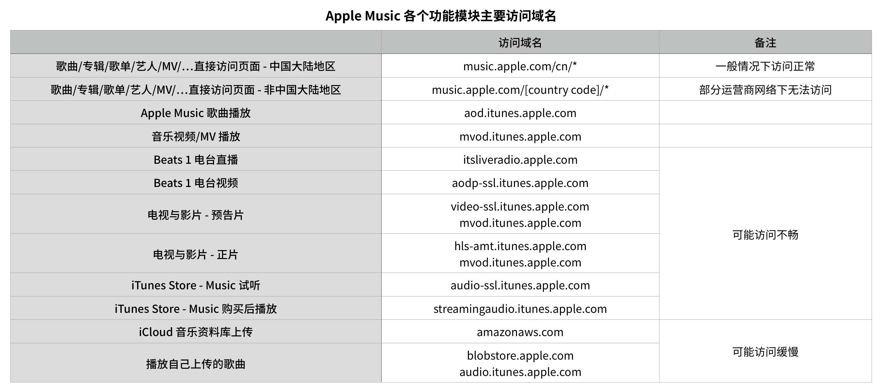
总结
综上，文章从在线曲库、包含功能（电台、朋友、Top 100 歌单、电视与影片、iTunes Store、类似艺人、音乐向导）、曲库语言、内容推荐、多平台使用、多 Apple ID 使用、订阅价格、付款方式多个方面对五个常见地区的 Apple Music 及其相关功能进行了对比阐述，来看下面这张总结性表格：
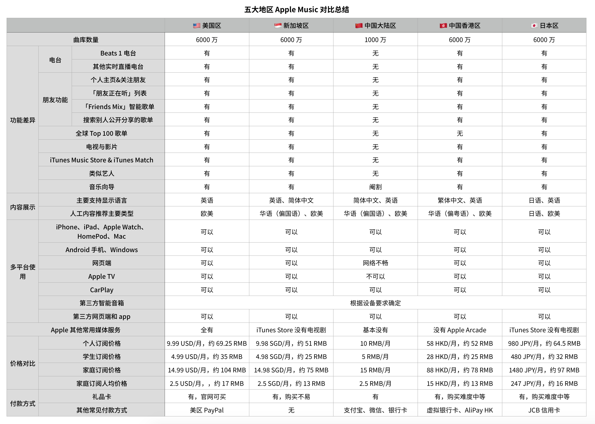
一句话总结：
- 中区：曲库阉割，功能缺失，简体中文界面，Apple 媒体资源匮乏，价格低廉，适合对曲库没有强烈需求的你；
- 美区：曲库丰富，功能齐全，英文界面，Apple 媒体资源丰富，礼品卡容易购买，适合听欧美歌曲的你；
- 港区：曲库丰富，功能齐全，繁体中文界面，礼品卡购买难度中等，适合听华语歌曲（偏粤语）和欧美歌曲的你；
- 新加坡区：曲库丰富，功能齐全，简体中文界面，礼品卡购买难度较大，适合听华语歌曲（偏国语）和欧美歌曲的你；
- 日区：曲库丰富，功能齐全，英文/日语界面，礼品卡购买难度中等，适合听日语歌曲和欧美歌曲的你。
看到这里的你，根据自己的需求心里有做出选择了吗？
如果你觉得这篇文章对你有所帮助，欢迎请我喝杯咖啡，感谢你的支持😁